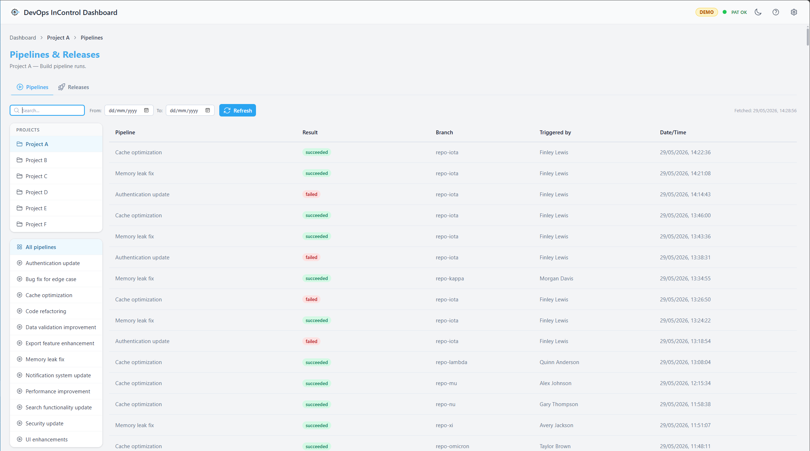
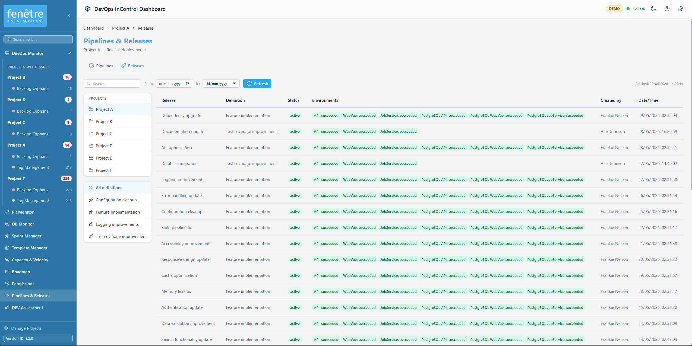

Pipelines & Releases
This screen combines build pipeline history and release deployment status for a specific Azure DevOps project. Use the tabs at the top to switch between Pipelines and Releases.
Pipelines
The Pipelines tab shows your build history so you can quickly check whether recent builds have succeeded, failed, or are still running.

Build pipeline history with colour-coded results.
How to Use It
- Navigate to a project via the sidebar and click Pipelines & Releases.
- The screen loads all recent build runs.
- Use the pipeline name tabs at the top to filter by a specific pipeline, or click All to see everything.
- Use the Search bar and date range filters to narrow down results.
Build Status Colours
| Colour | Meaning |
|---|---|
| Succeeded | The build completed successfully. |
| Failed | The build failed. Check the logs in Azure DevOps. |
| Partially succeeded | The build ran but some steps had warnings or non-critical failures. |
| In progress | The build is currently running. |
| Cancelled | The build was cancelled before completion. |
Table Columns
| Column | Description |
|---|---|
| Pipeline | The name of the build pipeline. |
| Result / Status | The outcome of the build (see colours above). |
| Branch | Which Git branch triggered the build. |
| Triggered by | Who or what started the build. |
| Date / Time | When the build ran. |
Releases
The Releases tab shows deployment history. It helps you track which releases have been deployed, to which environments, and whether they succeeded.

Release deployment history with environment status badges.
How to Use It
- Switch to the Releases tab.
- Use the release definition tabs at the top to filter by a specific release pipeline, or click All to see everything.
- Use the Search bar and date range filters to narrow down results.
Release Table Columns
| Column | Description |
|---|---|
| Release name | The name of the release (e.g. "Release-42"). |
| Definition | Which release pipeline created this release. |
| Status | The overall status of the release. |
| Environments | Small badges showing the deployment status for each environment (e.g. Dev, Test, Production). Each badge is colour-coded. |
| Created by | Who triggered the release. |
| Date / Time | When the release was created. |
Environment Status Colours
| Colour | Meaning |
|---|---|
| Succeeded | Deployment to this environment succeeded. |
| Failed / Rejected | Deployment failed or was rejected. |
| Pending / In progress | Deployment is waiting for approval or currently running. |
| Not deployed | This environment has not been deployed yet. |
Tip
Use the date range filters to focus on a specific sprint or release period.